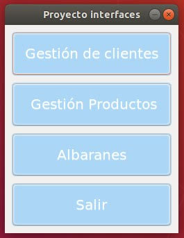
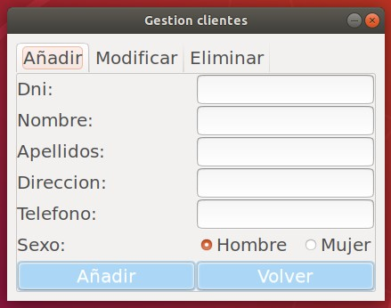
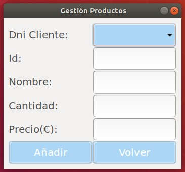
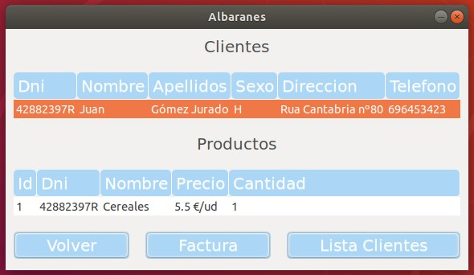

Guía Usuario¶
Esta es una aplicación que funciona en un entorno gráfico ubuntu con Gtk3. La aplicación simula un programa de gestión de una tienda y dispone de las siguientes carácterístiacas:
Varios formularios, entre ellos:
-
- Tenemos un menu de inicio en el que podemos elegir entre 4 opciones:
-

Gestión de clientes, crear, modificar o eliminar.
Gestión de productos, crear producto asignado a un cliente.
Albaranes, dónde listamos clientes y productos asignados a cada cliente mediante un treeview sensible a la selección y generamos facturas o listaclientes.
Salir, para salir de la aplicaciçón, cerrando en la X también serviría.
-
Como base de datos utilizo SQLite3 en modo local, en la que se crean dos tablas, para clientes y productos, con las que interaccionamos desde la interface.
Todas las excepciones o posibles errores están tratados y la interfaz es bastante sencila e intuitiva, y junto con esta información se complementa.
Para generar los informes en pdf utiliz Reportlab, en la ventana de albaranes se puede generar una factura de un cliente o una lista de clientes en pdf que se abren automáticamente para revisarlos.
Su funcionamiento es sencillo, al ejecutarse aparece un menu con 4 opciones para navegar a las distintas funcionalidades. En la primera Gestión de clientes, se podrán añadir nuevos clientes, modificarlos escogiendo mediante un combo box su dni y eliminarlos. A continuación tenemos la Gestión de productos en la que podemos asignar productos a clientes. Y por último el botón para acceder a la ventana de Albaranes en el que podemos listar clientes y sus productos asignados mediante un treview que recoge el cliente seleccionado y a su vez también crear factura para el cliente seleccionado o generar una lista de clientes en general. Por último tenemos un botón para salir de la app, aunque es posible salir en cualquier momento utilizando la pestaña de cerrar y también es posible volver al inicio desde cluaquier ventana.